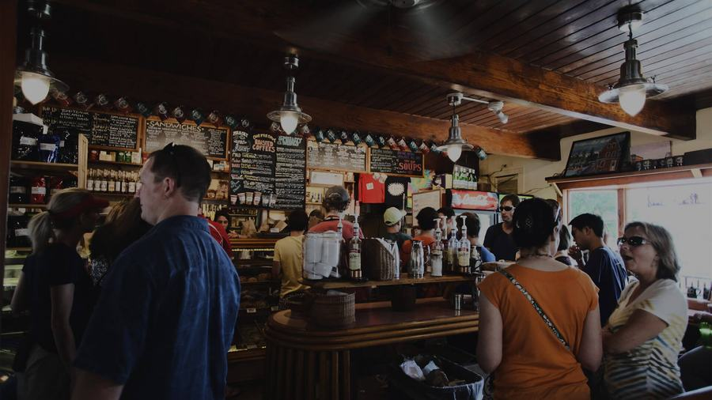

Infidelidad conyugal
Vigilancia discreta, registro horario de movimientos y anexos audiovisuales que responden la pregunta con hechos, no con interpretaciones.
Ver cómo trabajamosInvestigación privada · Ecuador
Reunimos pruebas verificables, documentadas y presentables ante un tribunal. Con la discreción que su situación exige y sin exponer su identidad.
Qué investigamos
Cada encargo se abre con un objetivo escrito y se cierra con un informe. Lo que no podemos documentar, no se lo cobramos.
Vigilancia discreta, registro horario de movimientos y anexos audiovisuales que responden la pregunta con hechos, no con interpretaciones.
Ver cómo trabajamosEquipos rotativos que documentan rutinas, contactos y lugares frecuentados sin ser detectados. Con parte diario y cadena de custodia.
Ver alcanceIdentificamos perfiles ocultos, cuentas secundarias y vínculos entre personas a partir de fuentes abiertas, sin vulnerar dispositivos ajenos.
Ver alcanceParadero de deudores, familiares sin contacto o personas que evaden una notificación judicial. Entregamos dirección verificada en terreno.
Ver alcanceFuga de información, competencia desleal, absentismo simulado y verificación de antecedentes antes de contratar o asociarse.
Ver alcanceDocumentación estructurada para divorcio, tenencia, alimentos o despido, con el detective disponible para ratificar en audiencia.
Ver alcanceNuestro criterio
Escribimos en estricto apego a los hechos. Sin adjetivos, sin suposiciones y sin rellenar los vacíos con conjeturas. Si algo no se pudo verificar, el informe lo dice.
Su identidad, la del investigado y el material recopilado quedan protegidos por acuerdo escrito antes de que empiece el trabajo de campo.
La verdad se robustece con la investigación y la dilación; la falsedad, con el apresuramiento. Tácito · principio que ordena nuestro trabajo
Qué recibe usted
Cómo avanza un caso
Nos cuenta su situación por teléfono, WhatsApp o en persona. Sin costo y sin obligación de continuar.
Definimos objetivo, alcance legal, plazo y honorarios cerrados. Se firma el acuerdo de confidencialidad.
El equipo asignado documenta los hechos. Usted recibe avances según la periodicidad que acordemos.
Le explicamos el expediente en persona y le acompañamos si debe presentarlo ante un juzgado.
El operativo por dentro
Un seguimiento se sostiene con equipo adecuado, relevos y paciencia. Esto es parte de lo que hay detrás de cada informe que entregamos.
Áreas de investigación
Infidelidad, abandono de hogar, conductas de riesgo en hijos adolescentes o dudas sobre la persona con la que un familiar se ha vinculado.
Trabajamos con fuentes abiertas y con el material que usted posee legítimamente. No accedemos a dispositivos ni cuentas ajenas: eso es delito y arruina el caso.
Documentamos conductas que afectan a la empresa con el nivel de prueba que exige un despido justificado o una denuncia penal.
Coordinamos con su defensa desde el inicio para que el informe cubra exactamente los hechos que hay que acreditar.
Antes de iniciar una acción de cobro conviene saber si el deudor tiene bienes, actividad o domicilio real. Eso es lo que averiguamos.
Antes de llamarnos
Ninguna de estas conductas prueba nada por sí sola. Aparecen juntas y sostenidas en el tiempo cuando hay algo que ocultar. Si reconoce varias, conviene salir de la duda.
Cómo investigamos una infidelidad
Pasa a estar siempre boca abajo, se lleva al baño y cambia de clave sin explicación.
Reuniones nuevas, viajes cortos y demoras que se justifican con detalle excesivo.
Cambios de imagen, gimnasio o perfume nuevo sin un motivo que los acompañe.
Menos conversación, irritabilidad ante preguntas simples y discusiones provocadas.
Consumos, retiros o transferencias que no coinciden con los gastos del hogar.
Cuentas nuevas, listas de amigos depuradas y publicaciones dirigidas a alguien.
Atendemos las 24 horas, todos los días del año. Nadie sabrá que nos llamó.